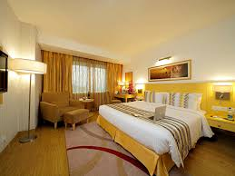
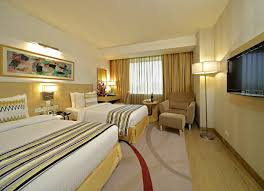

HISTORY
The first Radisson hotel was built in 1909 in Minneapolis, Minnesota, United States. It is named after the 17th-century French explorer, ranger and furrier Pierre-Esprit Radisson.[1] The hotel was purchased in 1962 by the Carlson Company. Carlson expanded the chain into one of the top hotel corporations by 2013. On top of Radisson, Carlson also owned several other brands, such as Park Inn, Park Plaza (acquired in 2000), and Country Inns & Suites (founded by Carlson in 1986)
BRANDS
Radisson Blu is an international chain of upscale hotels. Its hotels are mainly located in major cities, key airport gateways and leisure destinations. Radisson Blu has roots dating back to the opening of the SAS Royal Hotel in Denmark in 1960 and was the world's first designer hotel.[4]:378-379 After several name changes, spin offs, and rebranding, the Radisson Blu brand name was established in 2009.[5]
Radisson Blu Edwardian Hotels is a line of luxury hotels in London and Manchester, owned by Edwardian Hotels and often operating in historic buildings:[6] Some of its hotels include the Radisson Blu Edwardian, Heathrow and the Radisson Blu Edwardian, Hampshire.
ROOMS

